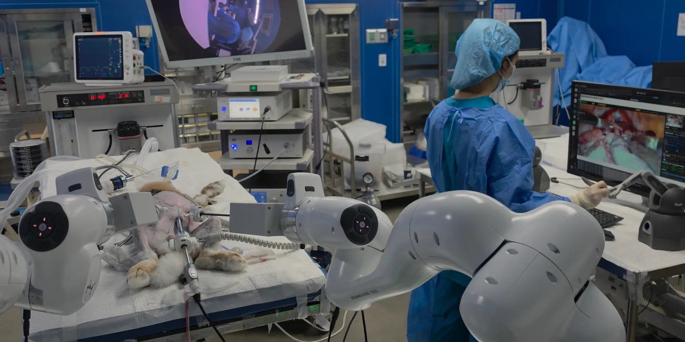
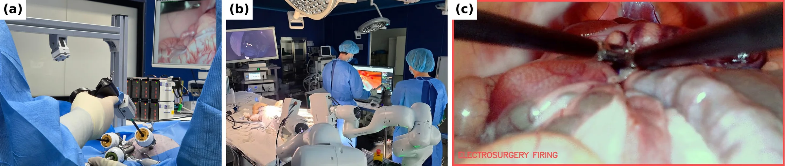
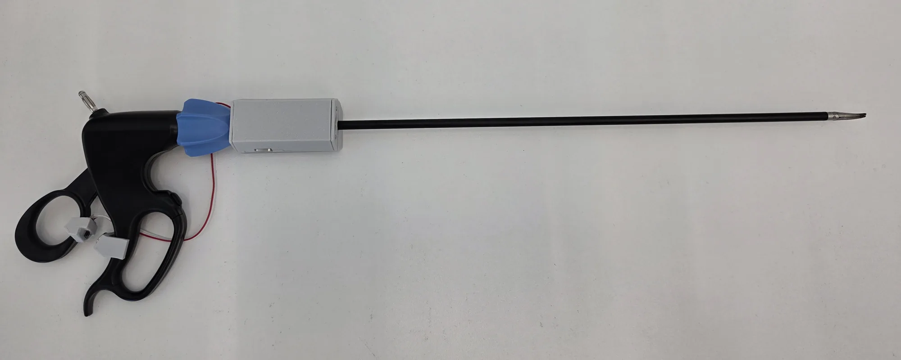
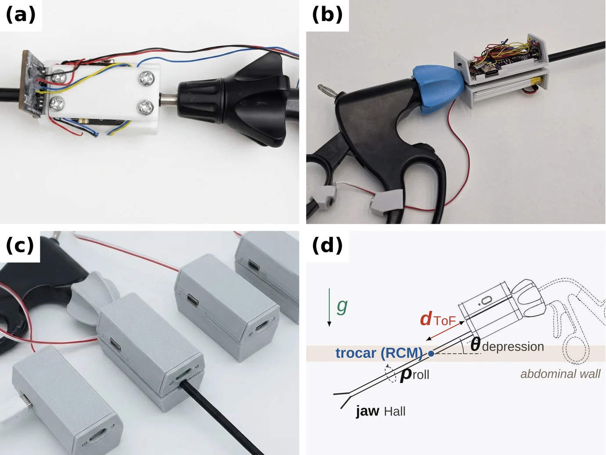
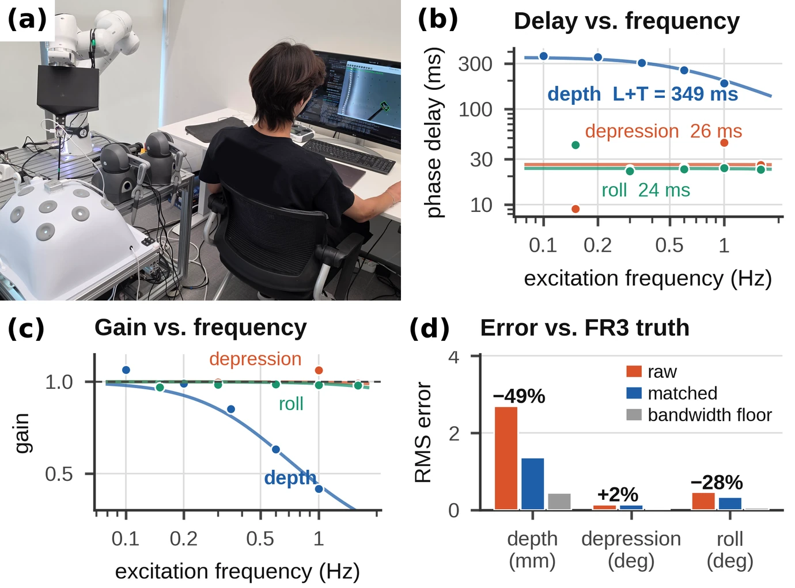
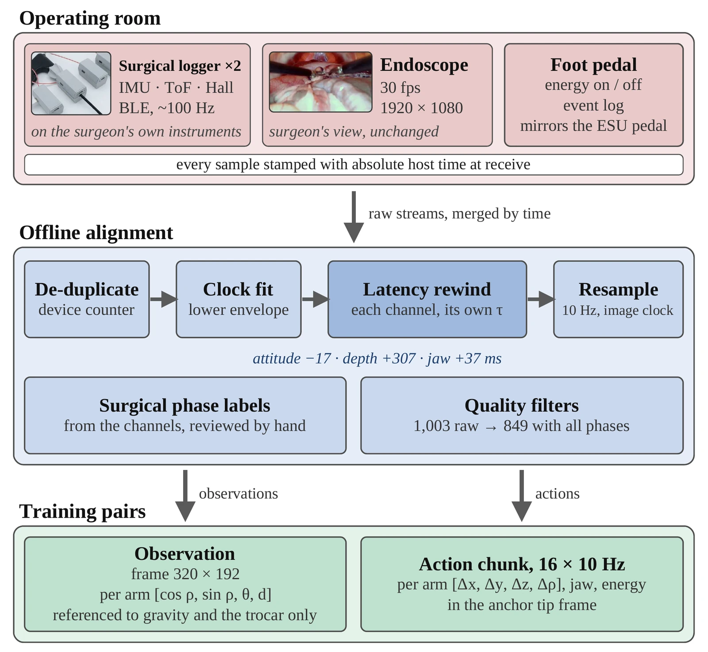
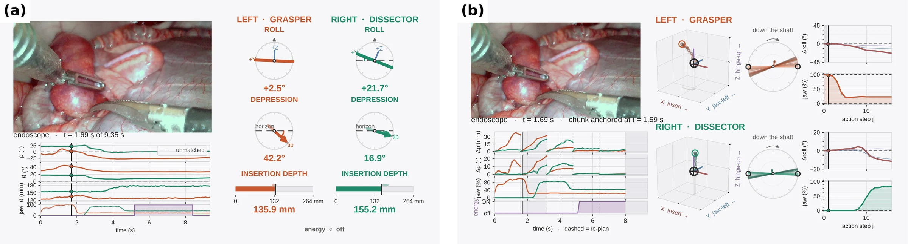
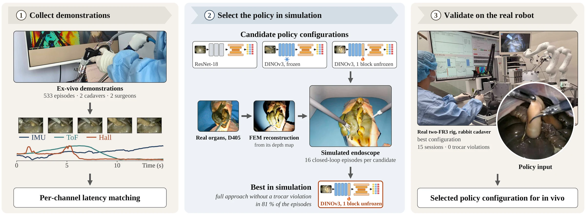
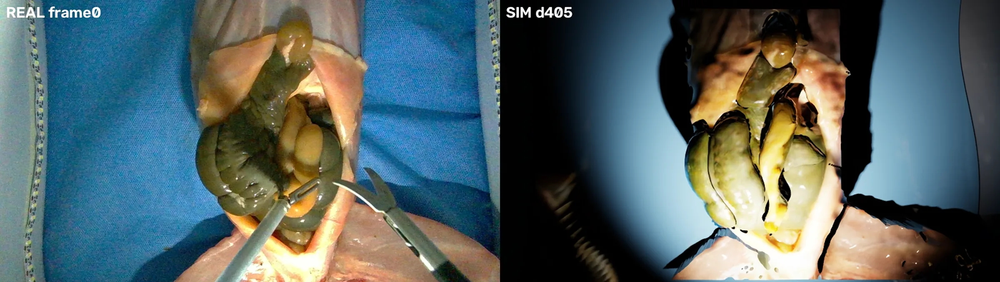
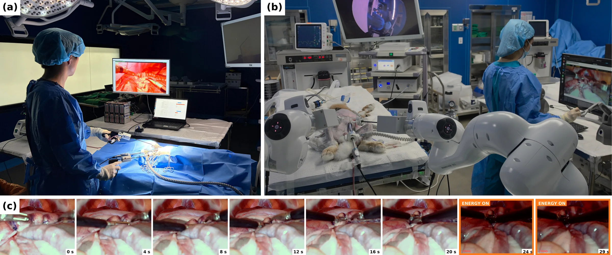

From Instrument-Mounted Demonstrations to In-Vivo Execution: Learning Bimanual Laparoscopic Appendectomy Without Robot-Collected Demonstrations
- Department of Transdisciplinary Medicine, Seoul National University Hospital
- Rosota Inc., Seoul, Republic of Korea
- Department of Medicine, Seoul National University College of Medicine
- Department of Mechanical Engineering, Seoul National University
- Department of Computer Science and Engineering, Seoul National University
- Department of Surgery, Seoul National University Hospital
- Department of Surgery, Seoul National University College of Medicine
- Institute of Convergence Medicine with Innovative Technology, Seoul National University Hospital
- Interdisciplinary Program in Medical Informatics, Seoul National University College of Medicine
- Eulji University College of Medicine
- Department of Mechanical Engineering, Chungang University

The signal hand-held surgery throws away
Most minimally invasive surgery is still performed by hand. Robotic surgery is growing, with about 3.15 million da Vinci procedures worldwide in 2025, yet in a US national inpatient sample three of four minimally invasive abdominal operations were laparoscopic rather than robotic. On a teleoperated robot the surgeon's instrument motion is recorded as a by-product. In hand-held surgery everything except the endoscope video is lost the moment the operation ends, and that lost signal is exactly what imitation learning needs.
This work captures it in the operating room and turns it into a surgical robot policy. A logger on the shaft of an ordinary laparoscopic instrument records the surgeon's own motion. A processing chain aligns its channels. A diffusion policy is trained on those demonstrations, selected by closed-loop rollouts in simulation, retrained on in-vivo recordings, and run on two FR3 arms in live animals with electrosurgery armed. The robot never collected a demonstration. It served only as the timing reference for calibration and as the executor.
Abstract
Most minimally invasive surgery is still performed with hand-held laparoscopic instruments, and the surgeon's instrument kinematics are lost when the operation ends; only the endoscope video is kept. This paper presents an end-to-end pipeline that captures this motion in the operating room and uses it to train a surgical robot policy, validated on live animals. We introduce a surgical instrument-state logger that mounts on the shaft of a standard laparoscopic instrument and recovers its pose and jaw state from an inertial sensor, a time-of-flight sensor and a Hall sensor, with no external camera or tracker. A data pipeline measures the latency of every sensor channel against a robot ground truth and aligns the channels before forming observation–action pairs. On these demonstrations we train a diffusion policy with a fine-tuned DINOv3 backbone, selecting its design by closed-loop rollouts in a physics simulator reconstructed from depth maps of an ex-vivo rabbit appendix. The policy is then retrained on 849 in-vivo demonstrations from four live rabbits and deployed on four additional live rabbits with electrosurgery armed. With the surgeon selecting the surgical phase, the policy completed the appendectomy in three of the four animals. The results show that demonstrations recorded from a surgeon's own instruments are sufficient to train, select and deploy a bimanual surgical policy in vivo. The robot serves only as the timing reference for sensor calibration and as the executor, and collects no demonstrations. Both demonstration corpora are released to support future surgical robot learning research.

Supplementary video
The logger, the latency measurement on the robot, closed-loop selection in the simulator, and the in-vivo deployments, in order.
A logger on the surgeon's own instrument
Four degrees of freedom through the trocar, measured on the shaft, outside the patient.
A rigid instrument through a trocar has four degrees of freedom, not six, because the remote-centre-of-motion constraint removes two. Orientation about the trocar comes from an IMU. The remaining degree of freedom, insertion depth , is the shaft length from the board to the tip minus the board-to-trocar distance, and a time-of-flight sensor pointed down the shaft measures it directly. A linear Hall sensor on the handle reads a magnet on the moving ring and so measures jaw opening.
Nothing enters the patient that was not there before. The device mounts outside, on the shaft, and needs no external camera or tracker. The in-vivo generation streams over BLE at 50 to 200 Hz from a 1000 mAh cell, which at the measured 50 mA draw lasts about 20 h, longer than an operating-room day.
Against the FR3 tip pose during free motion, the latency-matched channels track shaft roll and depression to 0.42° and 0.17° RMS and insertion depth to 1.36 mm RMS, and tip displacement over a 1.6 s action chunk to 1.38 mm RMS. Video-based instrument tracking, for comparison, reaches 2.6 to 3.0 mm at best on public benchmarks and 5.4 to 12.4 mm under occlusion. A markerless fit of the shaft's silhouette edges on our own rig located the axis only to a median 10.7 mm.


Every channel is late, and by a different amount
A transport delay can be undone by a time shift. A first-order lag cannot, because part of the motion is gone.
Each channel reaches the log later than the event it describes. An FR3 drove an instrument carrying the logger through a phantom trocar along swept sines while its tip pose, published at 200 Hz, served as ground truth, and each channel was fitted with
where is a pure transport delay and the time constant of a first-order lag. The distinction matters. A channel with can be corrected by a time shift; one with a large cannot, because part of the motion is gone.
On the ex-vivo logger the attitude channels showed pure transport delays of 24 to 26 ms, while insertion depth showed ms, 93% of it first-order lag from the firmware's exponential moving average, with gain falling to 0.42 at 1 Hz. The resulting 325 ms depth-to-attitude skew is 3.5 policy steps at 10 Hz, and no common time shift can remove it. Rewinding each channel by its own latency (−17, +307 and +37 ms for attitude, depth and jaw) cut dynamic depth error from 2.69 to 1.36 mm (−49.5%) and shaft-roll error by 28%. The depression channel, whose 26 ms latency is below what the motion resolves, changed by +2% and serves as the control.

From logs to training pairs
Every stream is stamped with absolute time at the earliest receive point, rewound by its own measured latency and resampled on the endoscope clock.
The magnetometer heading of a low-cost IMU drifts in an operating room, so the observation uses only what gravity and the trocar define: the endoscope frame at 320 × 192 and, per arm, . The jaw aperture is deliberately not an input. With it, the policy learns "it is closed now, so keep closing".
Actions are 16-step chunks at 10 Hz of per-arm tip-frame deltas relative to the chunk's anchor pose, plus absolute jaw aperture and, in vivo, an absolute electrosurgery channel owned by the cutting arm. Because every label is relative to its anchor, it is invariant to the heading zero and to where the trocar sits, so no correspondence between the demonstration trocar and the robot's trocar is needed.
Of 1,003 raw in-vivo episodes, 135 were dropped for sensor-stream quality or because they were not part of the procedure, and 19 more for a missing phase or an early-ending stream.


| Corpus | Episodes | Duration | Setting |
|---|---|---|---|
| Ex-vivo | 533 | 74 min | 2 rabbit cadavers in a phantom, ex-vivo logger |
| In-vivo | 849 | 135 min | 4 live rabbits, in-vivo logger, energy pedal |
Table I Demonstration corpora used for training. Each episode is one attempt at the appendectomy recorded with the logger on the surgeon's hand-held instruments. Duration is the total recorded time after quality filtering.
The policy, and how its configuration was chosen
31 candidates were compared by closed-loop rollouts in a simulator reconstructed from the ex-vivo scene. Offline validation error turned out to be anti-correlated with safety.
The policy is a 1-D U-Net diffusion policy with DDIM sampling over 16-step chunks, with three changes. A single shared DINOv3 ViT-B/16 replaces the two ResNet-18 encoders, with attention pooling and only the last transformer block trainable (7.1 M of 85.7 M parameters). Because the observation window is 0.2 s, the policy cannot infer where in the procedure it is, so the U-Net is conditioned by FiLM on an ordinal encoding of the surgical phase plus two timing channels. And a chunk executor commits three actions per chunk and replans, with the index it starts from absorbing the observation anchor, the arm's measured execution latency and inference.
Rather than select that configuration by offline validation error, 31 candidates were compared by closed-loop rollouts in a simulator whose organs are reconstructed from depth recordings of the ex-vivo scene: 16 episodes of 15 s each, scored on stage counts and on one hard failure, a trocar violation above 10 mm.
Three results from the table
- Replacing the ResNet-18 encoders with a frozen DINOv3 cut trocar violations from 88% to 6% (Fisher p = 7 × 10⁻⁶) and raised lift from 12% to 69%.
- Training the same configuration on episodes processed without per-channel latency matching left violations unchanged but eliminated successful lifts (19% vs. 81%, p = 0.001), while its offline action error was better, 0.138 against 0.148.
- Across the unfreezing sweep, validation MAE improves monotonically from 0.152 to 0.142 while violations rise from 6% to 69%. The least safe encoder, ResNet-18, has a better MAE than the frozen DINOv3.
In this setting offline error is not merely uninformative about closed-loop success. It is anti-correlated with safety.

| Configuration | Trocar violation ↓ | Lift ↑ | Full approach ↑ | Grasp depth (mm) ↑ | MAE ↓ |
|---|---|---|---|---|---|
| Model | |||||
| GR00T-H (VLA), no phase | 12%[3–36] | 50% | 0%[0–19] | — | 0.184 |
| DP, ResNet-18 | 88%[64–97] | 12% | 12%[3–36] | 13.9 | 0.145 |
| DP, DINOv3 frozen | 6%[1–28] | 69% | 44%[23–67] | 0.0 | 0.152 |
| DP, DINOv3, last block unfrozen | 19%[7–43] | 81% | 81%[57–93] | 10.8 | 0.148 |
| Phase input (fixed: DINOv3, last block unfrozen) | |||||
| Manual phase | 19%[7–43] | 81% | 81%[57–93] | 10.8 | 0.148 |
| TCN (demo video) | 50%[28–72] | 31% | 25%[10–49] | 5.2 | 0.148 |
| TCN (simulator) | 25%[10–49] | 38% | 38%[18–61] | 10.3 | 0.148 |
| Unfrozen DINOv3 blocks (fixed: manual phase) | |||||
| None (frozen) | 6%[1–28] | 69% | 44%[23–67] | 0.0 | 0.152 |
| Last 1 block | 19%[7–43] | 81% | 81%[57–93] | 10.8 | 0.148 |
| Last 2 blocks | 19%[7–43] | 50% | 50%[28–72] | 10.7 | 0.146 |
| Last 3 blocks | 56%[33–77] | 38% | 38%[18–61] | 9.3 | 0.143 |
| Last 4 blocks | 69%[44–86] | 31% | 31%[14–56] | 8.8 | 0.142 |
| Latency matching (fixed: DINOv3, last block unfrozen, manual phase) | |||||
| With | 19%[7–43] | 81% | 81%[57–93] | 10.8 | 0.148 |
| Without | 19%[7–43] | 19% | 19%[7–43] | 11.0 | 0.138 |
| Replanning (fixed: DINOv3, last block unfrozen, manual phase) | |||||
| nexec = 3 | 19%[7–43] | 81% | 81%[57–93] | 10.8 | 0.148 |
| nexec = 1 | 69%[44–86] | 31% | 31%[14–56] | 10.7 | 0.148 |
Table II Closed-loop simulator results of the ex-vivo configuration ablation. 16 episodes of 15 s per configuration. Lift and Full approach (the selection criterion) count violation-free episodes; brackets are 95% confidence intervals. Italic rows name the factor varied and the settings already fixed. Highlighted rows mark the setting kept. All rows use latency matching and nexec = 3 unless varied. DP: diffusion policy.
DP, ResNet-18
Episode 10 of 16: lifts, then leaves the trocar band and the episode ends.
DP, DINOv3 frozen
Episode 7 of 16: safe, but the jaw never closes on tissue.
Without latency matching
Episode 0 of 16: the coordinated insertion that lifting needs does not happen.
DINOv3, last block unfrozen deployed
Episode 1 of 16: grasp, lift of 40 mm, dissector at the site.
Simulator endoscope recordings of the Table II evaluations, 10 fps, one frame per policy step. The full set of 16 episodes per configuration is in the paper workspace.
On the real ex-vivo rig
The selected configuration ran on the two-FR3 rig with a rabbit cadaver for about 18 minutes of policy control across 15 sessions with zero trocar violations and a peak RCM error of 0.23 mm. The vision-based phase predictor, however, saturated at the final phase within a median of 10.6 s, because rig frames lay outside its training manifold, so in vivo the surgeon set the phase by keypress.

In-vivo training and deployment
Retrained from scratch on the 849 in-vivo demonstrations, with the ex-vivo configuration and optimizer-step budget unchanged, and run on four live rabbits on a single day.
Because offline error had already failed as a selector, the checkpoint was accepted through pre-registered event-level gates on unseen episodes: every jaw-closing event detected, energy false-fire 0.019 and missed-fire 0.032 against gates of 0.05 and 0.30, and closed-loop gain 0.86/0.82 against a 0.8 gate.
Ex-vivo pre-training turned out not to matter. Trained from random initialization and from the ex-vivo weights on 25%, 50% and 100% of the corpus, both initializations passed the same gates in all six runs. Pre-training helped in offline error only while data were scarce (MAE 1.221 vs. 1.413 at 25% of the corpus, 1.157 vs. 1.173 at 100%). A policy for live tissue has to be trained on live-tissue demonstrations, which is the argument for an instrument that can collect them in the operating room.
On a single day the policy ran on four live rabbits at 5 Hz with electrosurgery armed. Inference on one RTX 4090 took a median 23.5 ms per step (95th percentile 59.7 ms), well inside the 200 ms control period. In each animal the surgeon placed the instruments, checked the hand-over state against the demonstration band, handed control to the policy, supplied the phase by keypress, and could take control back at any moment.
In three of the four animals a single rollout carried the instruments from grasp approach to the energized cut without the surgeon touching them. In the fourth the left arm was handed over in a poorly conditioned inverse-kinematics branch and the joint-limit governor aborted before the policy could act; the procedure was completed by hand. All four animals survived, with no gross abnormality during a week of observation.
Safety
Across all policy-controlled time that day the RCM error never exceeded 0.84 mm against a 5 mm abort threshold, and every sample that did exceed the threshold in the day's logs occurred under human teleoperation. In every sample of cautery under policy control, 108 samples at 10 Hz, the cutting jaw was closed, with aperture at most 0.7%.

What this does not claim
Not full autonomy. The surgeon selected the phase, because the vision-based phase predictor agreed with the surgeon on only 24.6% of policy control steps under the deployment endoscope, a domain shift familiar from phase recognition across hospitals.
Not a robot-free pipeline. An FR3 is the ground truth for the latency measurement and the ex-vivo test rig, though it collected no training demonstrations.
A small in-vivo study. Four demonstration animals and one deployment in each of four others, on a single day. Eight live rabbits were used in total. All animal procedures were approved by the BIOSTEP Institutional Animal Care and Use Committee (IACUC S26-BZ-0562).
Both demonstration corpora are public
Released in their recorded form, not as derived training arrays. Every stream carries absolute host timestamps so the per-channel latency matching can be reproduced or replaced.
585 episodes recorded on 12 July 2026, 533 used for training. Logger H5 per arm, 4K 60 fps endoscope clips, overhead camera, force channels, hand-corrected phase labels.
ROS 2 bags of the RGB-D camera above the phantom, the source of the simulator's organ geometry. Not needed to reproduce any result in the paper.
868 episode folders from four live rabbits recorded on 30 August 2026, 849 used for training. Endoscope video with per-frame timestamps, two logger files, pedal state and phase labels per episode.
File layouts, channel definitions, label vocabularies and the known issues of each corpus.
BibTeX
@article{yee2026instrument,
title = {From Instrument-Mounted Demonstrations to In-Vivo Execution: Learning Bimanual
Laparoscopic Appendectomy Without Robot-Collected Demonstrations},
author = {Yee, Dongho and Oh, Juahn and Lee, Jinseok and Lee, Jiyul and Seo, Yechan and
Jeong, Seong and Kim, Minsung and Shim, Seonho and Noh, Younghoon and Choi, Hyuk and
Kong, Youngbin and Lee, Kyu Eun and Kong, Hyoun-Joong},
journal = {arXiv preprint arXiv:2609.25625},
year = {2026},
url = {https://arxiv.org/abs/2609.25625}
}